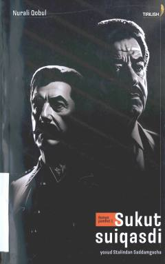

SSDiktatorlar va jamiyatdagi loqaydlikning fojiali oqibatlari haqidagi falsafiy roman-pamflet.
Ushbu asar insoniyat tarixidagi diktatorlar va ularning hokimiyatga kelish jarayonlari, shuningdek, jamiyatdagi loqaydlik va sukut saqlashning fojiali oqibatlari haqida hikoya qiladi. Muallif tarixiy shaxslar misolida xudbinlik, takabburlik va adolatsizlikning mohiyatini falsafiy nuqtai nazardan tahlil qiladi.